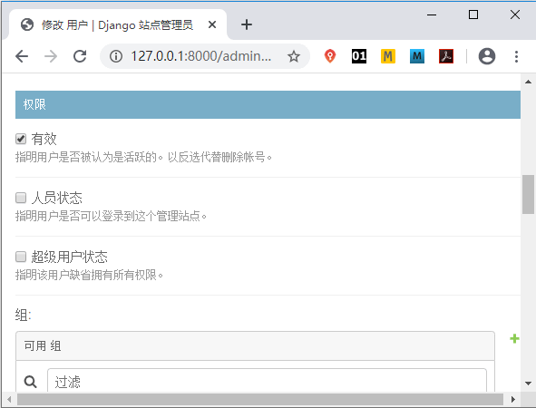
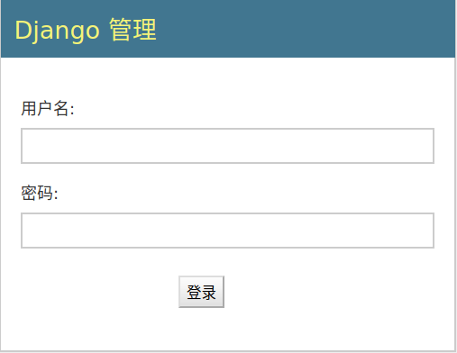
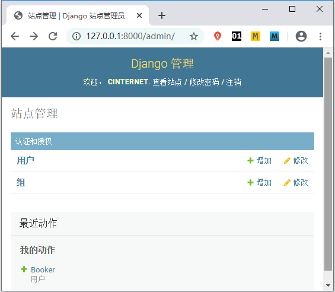
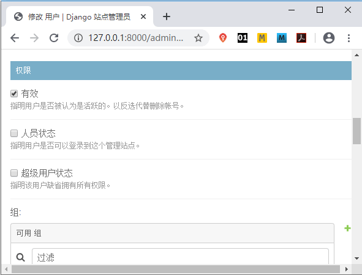
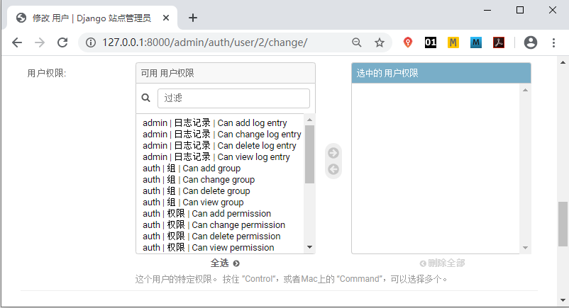
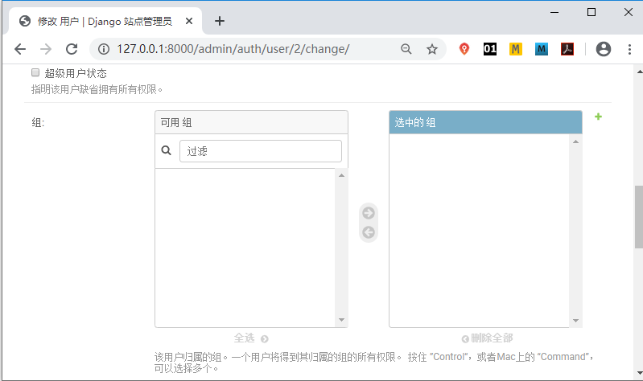
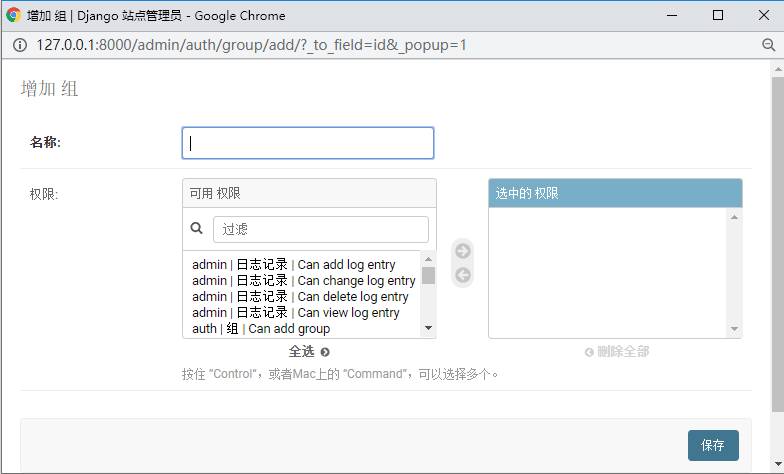
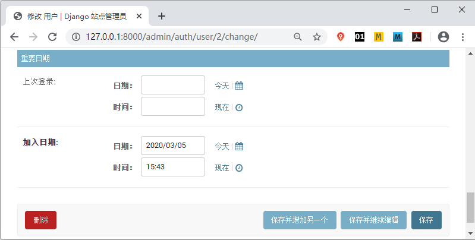
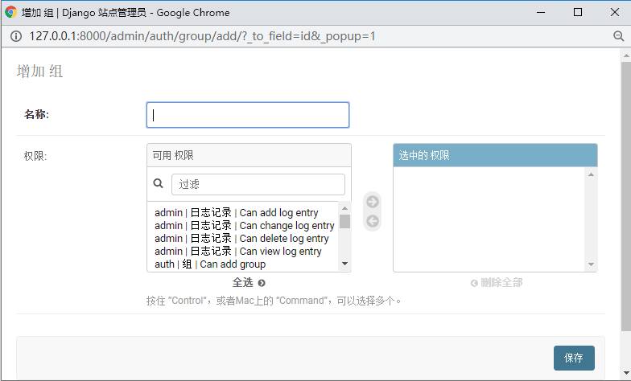
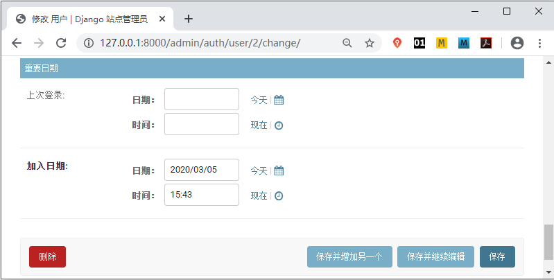

Django Admin后台管理系统
Django 的后台管理系统是非常出色的，新建项目以后，Django 就为我们设置好了后台管理系统的各种功能，本节我们将一起认识它！
我们知道，Web 站点上某些内容的改动是后台管理员来完成的，如果管理员直接用 Shell 或者 SQL 语句来修改，不仅麻烦，而且容易操作失误，从而导致数据不一致的结果。假如是一个不懂编程的人呢？应该怎么去操作呢？上述问题，说明了构建一个后台管理系统的重要性，通过后台管理系统为管理员提供一种便捷有效的操作方式。
后台管理系统主要是对数据表的存储做专门的管理，例如针对微博或者论坛类的站点，管理员需要删除不合规的文章，或者公司内部需要发布新的话题等，这些都是通过数据表的管理实现的。单一功能的后台系统比较容易构建，但是如果功能增多情况下，就需要对多个数据表做管理，这就增加了开发人员的重复性工作。Django 提供的后台管理系统很好的解决了这个问题，以下是后台管理系统主要功能的介绍。
如图1所示，是后台管理系统的登陆界面，通过超级管理员账户进行登录。
Admin 后台管理系统的功能是非常强大的。在以 Django 做为开发框架的小型软件公司，开发人员配置以及时间有限，无法短期内开发一套新的后台管理系统，在这种情况下，一般采用对 Admin 后台管理系统源码稍加改动的方法，把改动后的 Admin 系统作为软件的后台管理系统。
Admin 后台管理系统提供了用户类别、用户权限以及用户组权限的划分功能，如图3所示，Active (有效）、Staff status（人员状态）、Superuser status（超级用户状态）是用户的三种类别。

图3：Admin后台用户类别设置
如图4所示，Django 后台管理系统提供了用户权限划分功能。
Django 已经非常的成熟，一些软件社区和第三方平台给 Django 做了很多有用的插件，这使得后台管理界面更加美化，比如 django-admian-bootstrap 等。
1. 后台管理系统的重要性
我们先考虑一下，Django 为什么要引入后台管理系统呢？我们知道，Web 站点上某些内容的改动是后台管理员来完成的，如果管理员直接用 Shell 或者 SQL 语句来修改，不仅麻烦，而且容易操作失误，从而导致数据不一致的结果。假如是一个不懂编程的人呢？应该怎么去操作呢？上述问题，说明了构建一个后台管理系统的重要性，通过后台管理系统为管理员提供一种便捷有效的操作方式。
后台管理系统主要是对数据表的存储做专门的管理，例如针对微博或者论坛类的站点，管理员需要删除不合规的文章，或者公司内部需要发布新的话题等，这些都是通过数据表的管理实现的。单一功能的后台系统比较容易构建，但是如果功能增多情况下，就需要对多个数据表做管理，这就增加了开发人员的重复性工作。Django 提供的后台管理系统很好的解决了这个问题，以下是后台管理系统主要功能的介绍。
如图1所示，是后台管理系统的登陆界面，通过超级管理员账户进行登录。

图1：Admin后台登陆界面
登录后，如图2所示，是 Django Admin 提供的的站点管理功能。图1：Admin后台登陆界面

图2：Admin后台登录后界面
图2：Admin后台登录后界面
2. 了解Django后台管理功能
我们用下面命令来创建超级用户：python manage.py createsuperuser通过此命令来设置用户名、密码和邮箱。后续章节，还会用到 Admin 后台管理系统，有对此命令的说明。
Admin 后台管理系统的功能是非常强大的。在以 Django 做为开发框架的小型软件公司，开发人员配置以及时间有限，无法短期内开发一套新的后台管理系统，在这种情况下，一般采用对 Admin 后台管理系统源码稍加改动的方法，把改动后的 Admin 系统作为软件的后台管理系统。
Admin 后台管理系统提供了用户类别、用户权限以及用户组权限的划分功能，如图3所示，Active (有效）、Staff status（人员状态）、Superuser status（超级用户状态）是用户的三种类别。

图3：Admin后台用户类别设置

图4：用户权限划分
当然也提供了用户组权限的分配功能，图5、6所示，分别是添加组和分配组权限。图4：用户权限划分

图5：用户组权限划分

图6：新添加用户组权限

图7：时间记录
Django 原生的 Admin 管理界面，虽然没有做太多的修饰，但是开发者可以利用 Model Admin 实现个性化定制，比如字段值的过滤功能、表字段展示的排序、搜索功能等。上面展示的是中文的后台管理界面，原生的 Django 后台管理系统是英文的。所以需要简单设置才可以实现中文模式。图5：用户组权限划分

图6：新添加用户组权限

图7：时间记录
Django 已经非常的成熟，一些软件社区和第三方平台给 Django 做了很多有用的插件，这使得后台管理界面更加美化，比如 django-admian-bootstrap 等。
关注公众号「站长严长生」，在手机上阅读所有教程，随时随地都能学习。内含一款搜索神器，免费下载全网书籍和视频。

微信扫码关注公众号